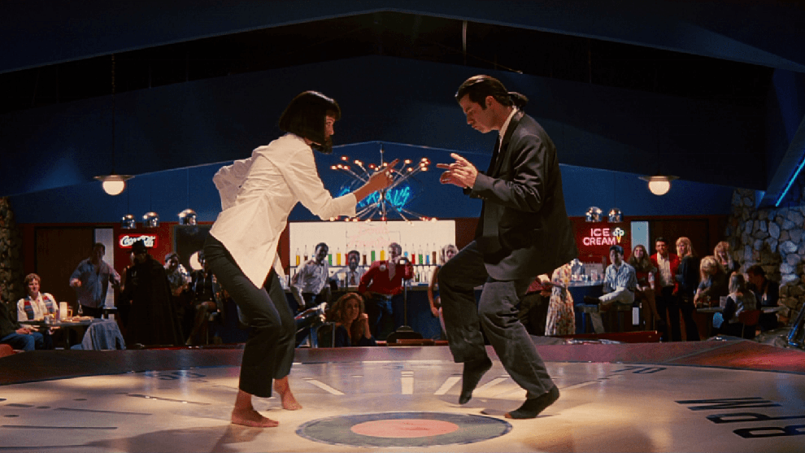

Netflis
Netflis
Puede que te interesen estas recomendaciones

Goodfellas

El padrino


Escena de John Travolta y Samuel L Jackson
Famosa escena de baile entre John Travolta y Uma Thurman
Jules y Vincent, dos asesinos a sueldo con no demasiadas luces, trabajan para el gángster Marsellus Wallace. Vincent le confiesa a Jules que Marsellus le ha pedido que cuide de Mia, su atractiva mujer. Jules le recomienda prudencia porque es muy peligroso sobrepasarse con la novia del jefe. Cuando llega la hora de trabajar ,ambos deben ponerse "manos a la obra". Su misión: recuperar un misterioso maletín.
Sinópsis por FILMAFFINITYEmilio García
Sin lugar a dudas, la mejor película de Quentin Tarantino. La mezcla entre humor negro, y la violencia característica de este director, forman un trabajo excepcional. Debo recalcar que esta inusual forma de contar una historia (no lineal), hace que se vuelva muy dinámica y entretenida, sin caer en lo absurdo. Es una de las mejores películas de la historia, ya que fue un hito en la cultura popular y significó gran inspiración para el cine de Hollywood y el resto del mundo.
Maria Martín
La película tiene toques de humor bastante bien elaborados, los diálogos son bien presentados y en ningún momento tiene escenas lentas o aburridas, la historia tiene un ritmo bastante bueno y en general hacen un estupendo trabajo al formarla, más que la acción la película nos cuenta una verdadera historia con partes que hacen sentir intrigados y con ganas de ver más, una obra maestra.